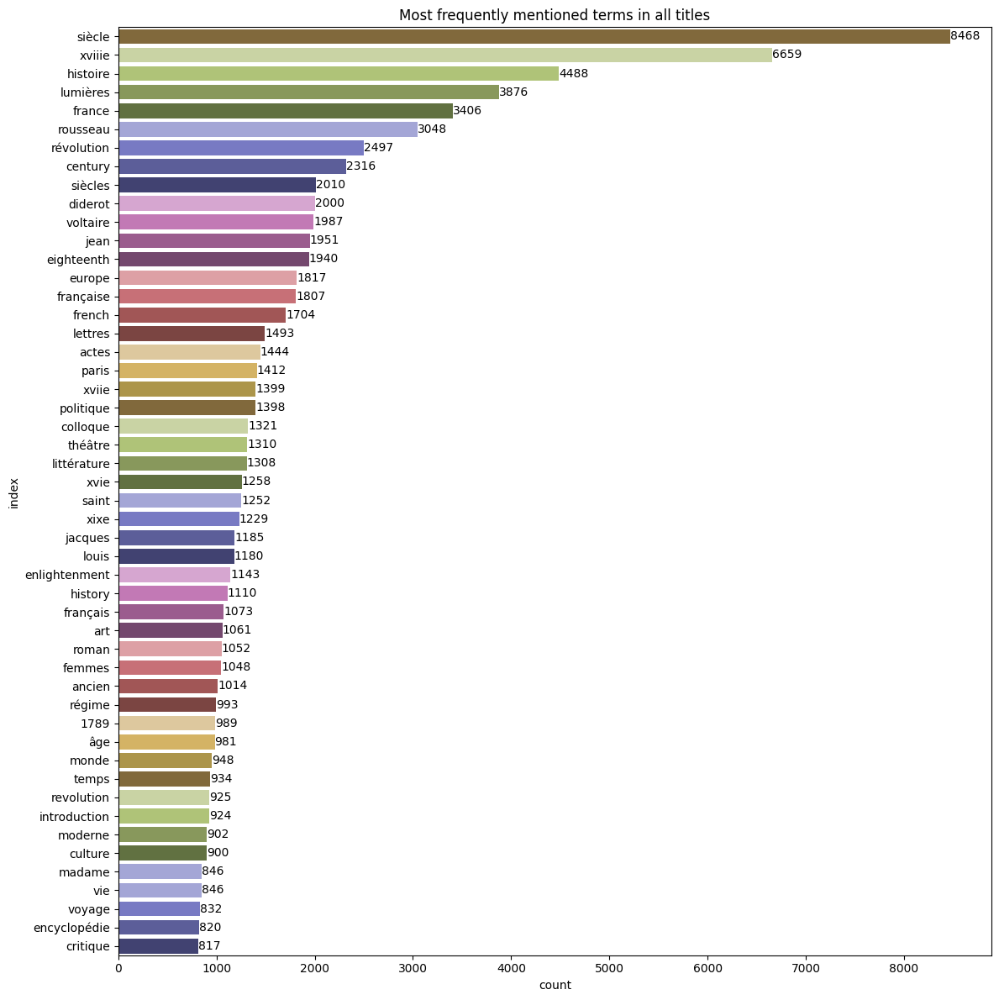

The titles included in the bibliography tell us a few things, for instance the language a publication is written in or the main themes (keywords, authors) that is the subject of a publication.
The first step is to identify the titles in the dataset. At the moment, the primary titles of journal articles, book chapters and books are taken into account.
Code
def get_titles(bibdata): """ Extract all the primary titles from the dataset. Primary titles are all titles except journal names. """# Find all primary "title" elements in the dataset titles = []# Article titles xpath ="//bib:Article/dc:title/text()" article_titles = bibdata.xpath(xpath, namespaces=namespaces) titles.extend(article_titles)# Book titles xpath ="//bib:Book/dc:title/text()" book_titles = bibdata.xpath(xpath, namespaces=namespaces) titles.extend(book_titles)# Book chapter titles xpath ="//bib:BookSection/dc:title/text()" bookchapter_titles = bibdata.xpath(xpath, namespaces=namespaces) titles.extend(bookchapter_titles)print("Number of titles found: "+str(len(titles)) +".")return titles# === Main === global titles titles = get_titles(bibdata)
Number of titles found: 78434.
The following step joins all words in all titles, then filters the list using French and English stopwords.
Code
def load_stopwords(stopwordsfile): withopen(stopwordsfile, "r", encoding="utf8") as infile: stopwords = infile.read().split("\n")#print(stopwords)return stopwords def get_keywords(titles, stopwords_fra, stopwords_eng): """ Identify recurring, content-bearing words in the titles. Returns: dict (keyword : frequency) """# Filtering of words in all titles titles =" ".join(titles) titlewords = re.split("\W+", titles) titlewords = [word.lower() for word in titlewords if word.lower() notin stopwords_fra] titlewords = [word.lower() for word in titlewords if word.lower() notin stopwords_eng]#print(titles[0:20])# Establish counts, transform to DataFrame, sort to select n most frequent words titlewords_counts =dict(Counter(titlewords)) titlewords_counts = pd.DataFrame.from_dict( titlewords_counts, orient="index", columns=["count"]).reset_index().rename({"index" : "word"}, ) titlewords_counts.sort_values(by="count", ascending=False, inplace=True) titlewords_counts = titlewords_counts[0:50]#print(titlewords_counts.head())return titlewords_countsglobal titlewords_countsstopwords_fra = load_stopwords(stopwords_fra_file)stopwords_eng = load_stopwords(stopwords_eng_file)titlewords_counts = get_keywords(titles, stopwords_fra, stopwords_eng)
The following step provides a visualization of the most frequently used words in the titles.
Code
def visualize_titlewords(titlewords_counts): plt.figure(figsize=(12,12)) palette = sns.color_palette("tab20b", len(titlewords_counts)-1) fig = sns.barplot( data=titlewords_counts, y="index", x="count", hue ="count", legend =False, palette = palette, orient='h' )for i in fig.containers: fig.bar_label(i,) fig.set(title="Most frequently mentioned terms in all titles") plt.tight_layout() plt.savefig( join("figures", "titlewords_counts.svg"), dpi=600 )visualize_titlewords(titlewords_counts)

As can be seen from this table, there are a few authors who appear with particularly high frequency in the titles: Rousseau, Voltaire, Diderot (in descending order).
In terms of thematic keywords, apart from indicators of the time period and geographic focus, the following terms stand out (again, in descending order of frequency): histoire, Lumières, révolution, lettres, history, Europe, Enlightenment, art, théâtre, revolution, roman, littérature, correspondance, voyage, culture, etc.